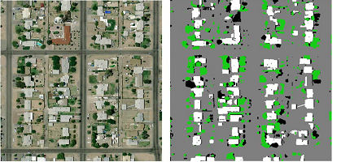
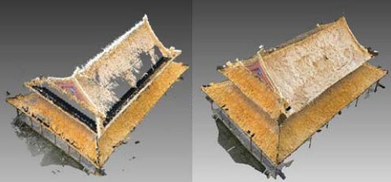

Er LI
I am an assistant researcher team member in Institute of Automation, Chinese Academy of Sciences.
I work on the research and development of large-scale, real-time solutions for real-world computer vision and machine learning problems, leveraging all aspects of system design, statistical learning, probabilistic models, and discrete and continuous optimization.
From 2013 to 2014, I was a Postdoctoral researcher with the Department of Engineering and Computing Systems, Arizona State University, Phoenix, AZ, USA , where I workded with Prof. Peter Wonka and Dr. John Femiani. Before that, I was a Postdoctoral Researcher with the Institute of Software, Chinese Academy of Sciences from 2012 to 2013.
I received a PhD in computer science from the National Laboratory of Pattern Recognition (NLPR)at the Institute of Automation of the Chinese Academy of Sciences（CAS), where I was advised by Prof.Xiaopeng Zhang. I received my B.S. degree in Automation from Wuhan University, Wuhan, China, in 2007.
Publications
Journal
- 
Robust Rooftop Extraction from Visible Band Images Using Higher Order CRF
Er LI, John Femiani, Shibiao Xu, Xiaopeng Zhang, Peter Wonka.
IEEE Transactions on Geoscience and Remote Sensing, 2015.
[PDF] - 
Shadow Based Rooftop Segmentation in Visible Band Images
John Femiani, Er LI, Anshuman Razdan, Peter Wonka.
IEEE Journal of Selected Topics in Applied Earth Observations and Remote Sensing, 2015.
[PDF] -
Graph cuts to combine multiple sources for feature extraction
John Femiani, Er LI.
IMAGE, 2014.
[PDF] -
Sampling and surface reconstruction of large scale point cloud
Er LI, Xiaopeng Zhang, Yanyun Chen.
IMAGE, 2014.
[PDF] -
Symmetry Based Chinese Ancient Architecture Reconstruction from Incomplete Point Cloud
Er LI, Xiaopeng Zhang, Yanyun Chen.
ICDH, 2014.
[PDF] -
Symmetry Based Chinese Ancient Architecture Reconstruction from Incomplete Point Cloud
Er LI, Xiaopeng Zhang, Yanyun Chen.
VRCAI, 2014.
[PDF] 
Illustrating the disassembly of 3D models
Jianwei Guo, Dong-Ming Yan, Er LI, Weiming Dong, Peter Wonka.
Computers & Graphics, 2013.
[PDF]
Project

(license excludes the papers and the code)